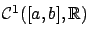
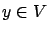
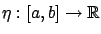

Next: 2.3.1 Euler-Lagrange equation
Up: 2. Calculus of Variations
Previous: 2.2.1 Weak and strong
Contents
Index
2.3 First-order necessary conditions for weak extrema
In this section we will derive the most fundamental result in calculus
of variations: the Euler-Lagrange equation. Unless stated otherwise,
we will be working with the Basic Calculus of Variations Problem defined
in Section 2.2. Thus our function space  is
is

,
the subset  consists of functions
consists of functions 
satisfying the boundary
conditions (2.8), and the functional  to be minimized takes
the form (2.9). The Euler-Lagrange equation provides a more explicit characterization of the first-order necessary condition (1.37) for this situation.
to be minimized takes
the form (2.9). The Euler-Lagrange equation provides a more explicit characterization of the first-order necessary condition (1.37) for this situation.
In deriving the Euler-Lagrange equation, we will follow the basic variational approach presented in Section 1.3.2 and consider
nearby curves of the form
 |
(2.10) |
where the perturbation

is another
 curve
and
curve
and  varies in an interval around 0 in
varies in an interval around 0 in
 . For
close to 0, these perturbed curves are close to
. For
close to 0, these perturbed curves are close to  in the sense of the 1-norm. For this reason, the resulting first-order necessary condition handles weak extrema.
However, since a
strong
extremum is automatically a weak extremum, every necessary
condition for the latter is necessary for the former as well.
Therefore, the Euler-Lagrange equation
will apply to both weak and strong extrema, as long as we insist
on working with
functions. As we know,
using the 0-norm allows us to relax the
requirement, but this will in turn necessitate a different approach (i.e., a refined perturbation family) when developing optimality conditions. We will thus refer to the conditions derived in this section as necessary conditions for weak extrema, in order to distinguish them from sharper conditions to be given later which apply specifically to strong extrema.
Similar remarks apply to other necessary conditions to be derived in this chapter. The sufficient condition of Section 2.6.2, on the other hand, will apply to weak minima only.
in the sense of the 1-norm. For this reason, the resulting first-order necessary condition handles weak extrema.
However, since a
strong
extremum is automatically a weak extremum, every necessary
condition for the latter is necessary for the former as well.
Therefore, the Euler-Lagrange equation
will apply to both weak and strong extrema, as long as we insist
on working with
functions. As we know,
using the 0-norm allows us to relax the
requirement, but this will in turn necessitate a different approach (i.e., a refined perturbation family) when developing optimality conditions. We will thus refer to the conditions derived in this section as necessary conditions for weak extrema, in order to distinguish them from sharper conditions to be given later which apply specifically to strong extrema.
Similar remarks apply to other necessary conditions to be derived in this chapter. The sufficient condition of Section 2.6.2, on the other hand, will apply to weak minima only.
Subsections
Next: 2.3.1 Euler-Lagrange equation
Up: 2. Calculus of Variations
Previous: 2.2.1 Weak and strong
Contents
Index
Daniel
2010-12-20